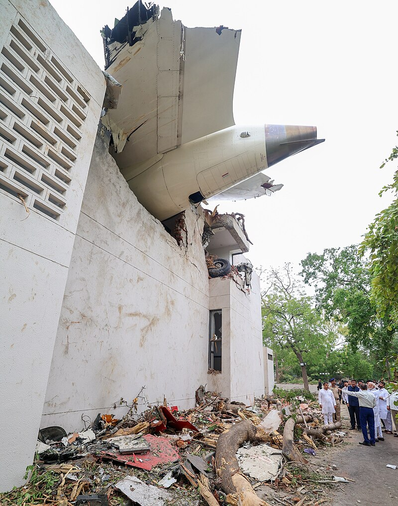

Boeing 787 crashes into Indian medical school, killing hundreds
2025, June 14
India
Thursday, an Air India Boeing 787-8 bound for Gatwick Airport in London crashed into Ahmedabad, Gujarat, northwestern India shortly after takeoff from a nearby airport. It was 1:38 p.m. local time (08:08 UTC). All but one of the 242 people on board perished in the crash, along with dozens more on the ground.The plane struck the city's Meghani Nagar neighborhood, crushing a residential building belonging to a nearby medical school. Firefighters and other emergency personnel reached the crash site and began loading victims onto stretchers.
The airline reported there were 169 Indians, 53 British nationals, seven Portuguese nationals, and one Canadian on the airplane. Air India's parent company, Tata Group, promised to pay for the medical care of the injured and to help rebuild the medical college. It also offered 10 million rupees (US$116,117) to the families of of those who died in the crash.
Boeing, the United States National Transportation Safety Board, and the U.S. Federal Aviation Administration all announced that they planned to cooperate with Indian authorities in investigating the crash.
According to The Guardian, which cited the Hindustan Times, the crash's sole survivor, a British-Indian man named Vishwash Kumar Ramesh, who was in seat 11A, said the plane made a loud noise almost immediately after takeoff: "When I got up, there were bodies all around me. I was scared. I stood up and ran. There were pieces of the plane all around me. Someone grabbed hold of me and put me in an ambulance and brought me to the hospital." Vishwash's brother Ajay, who was also on board, did not survive. Vishwash was on his way back to the United Kingdom after visiting family in India.
The Guardian also quoted Agence France-Presse, which reported a local resident saying, "We saw people from the building jumping from the second and third floor to save themselves. The plane was in flames. We helped people get out of the building and sent the injured to the hospital." Per Aviation Safety Network data, this is the first reported crash of any version of the 787. The 787-8 subseries is designed specifically to handle long, nonstop routes. The 787 fleet, called Dreamliners, carried its billionth passenger in May 2025, fourteen years after first entering airline use.